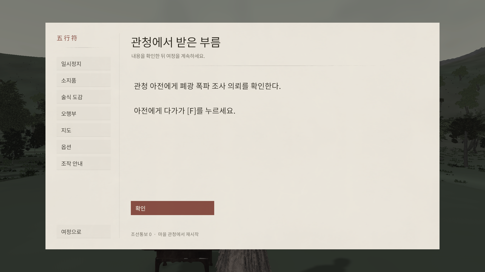
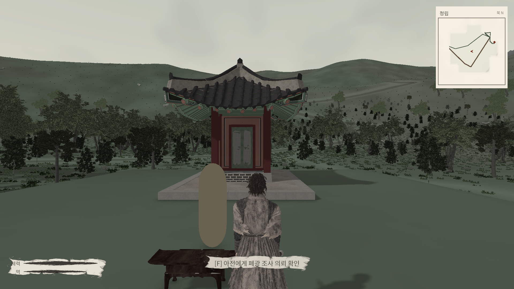
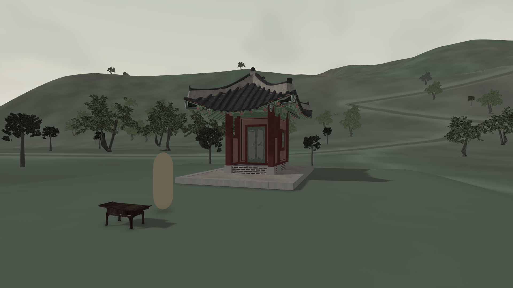
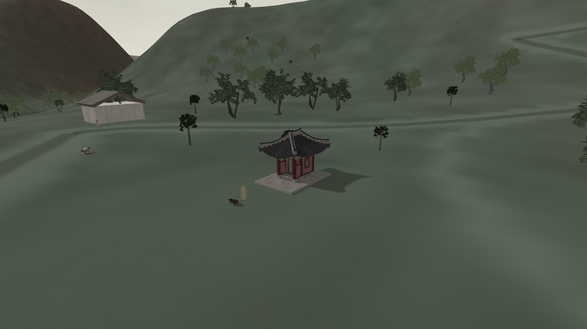
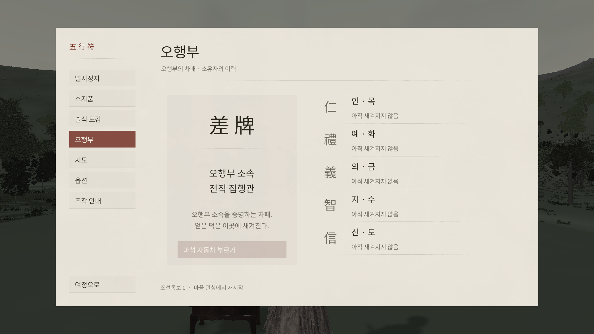
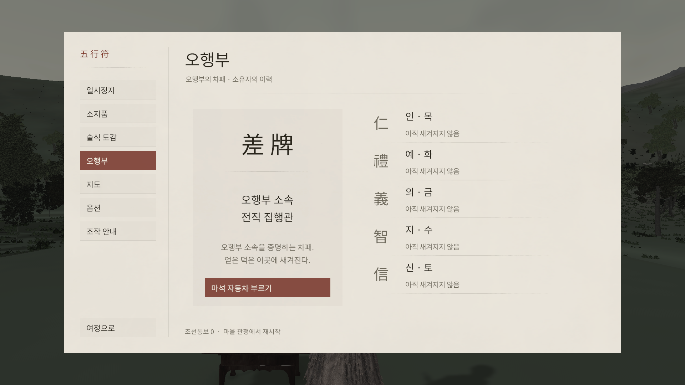

오행부 · PLAYTEST · 2026.09.15
관청에서 받은 의뢰,
오행부로 부르는 자동차
새 게임의 시작 목적과 차량 호출 기능을 연결했습니다. 기록첩을 제거하고, 효과음의 페이드와 폐광 바닥 접합부도 수정했습니다.
관청 아전과 F 대화Esc → 오행부 → 자동차 부르기큰길을 따라 금표 주막동쪽 산길 → 폐광 조사
관청 시작은 새 게임에 적용됩니다. 기존 저장은 위치와 진행을 유지합니다. 건물은 보유 소형 한옥을 재사용한 외관 시안이고 아전은 임시 캡슐입니다. 관아의 최종 미술 완성을 의미하지 않습니다.
먼저 무엇을 할지 알려주는 시작
폐광 폭파의 배후를 밝히지 않고 현장을 조사할 목적만 전달합니다. 별도 기록첩 없이 시작 안내, 아전 대화와 짧은 현재 목적을 사용합니다.

실제 Game View · 새 게임 첫 안내 · 1920×1080. 기록첩 없이 첫 상호작용을 안내합니다.
실제 Game View · 첫 위치와 F 상호작용 안내. 임시 NPC 외형과 미술 잔여 작업을 포함한 현재 화면입니다.
Edit 검토 카메라 · 마당 앞. 앞을 가리던 확정 배치 나무 두 그루만 제거했습니다.
Edit 조감도 · 기존 지형과 도로 위의 관청 외관 시안. 주변 마을 전체는 미완성입니다.주차한 곳으로 돌아갈 필요 없는 호출
오행부에서 기존 차량 한 대를 가까운 안전한 큰길로 부릅니다. 지지면·기울기·차체·승하차 공간을 확인하고, 차량이 움직이거나 누군가 탑승했거나 즉시 반복 호출하면 위치를 바꾸지 않습니다.
도로는 호출 위치의 조건입니다. 큰길 밖 주행 강제 차단이나 자동 하차는 적용하지 않았습니다. 금빛 5소켓 오행부의 3D 외형과 차량 소환 VFX는 아직 제작하지 않았습니다.

실제 Game View · 의뢰 확인 전에는 호출 버튼이 잠겨 있습니다.
실제 Game View · 의뢰가 저장된 테스트 슬롯을 다시 로드한 화면. 호출 버튼 활성화, 기록첩 제거 확인.메뉴 페이지 전환은 진단 명령으로 실행했습니다. 호출·탑승·하차 검사는 실제 연결 API와 버튼 콜백을 사용했으며, 사용자 입력 완주 영상은 아닙니다.
실제로 확인한 바닥 중첩 수정
입구 접근 바닥이 동굴 내부로 겹치며 검은 삼각형을 만들던 부분을 제거하고 접합 높이를 완화했습니다. 560/560 지지 표본과 30cm 구간 최대 높이 변화 2.59cm를 확인했습니다. 아래는 수정 후 화면이며, 원본 메시와 첫 수정 실패의 수치 기록은 보존했습니다.
 수정 후 · 입구 왼쪽 접점. 접근 바닥을 실내 바닥에 접합했습니다. 오른쪽의 거친 암벽 접점은 일부 남습니다.
수정 후 · 입구 왼쪽 접점. 접근 바닥을 실내 바닥에 접합했습니다. 오른쪽의 거친 암벽 접점은 일부 남습니다. 기존 폐광 저장 위치의 실제 Play 카메라 구도 · HUD 제외 렌더. 이 시점의 벽·천장·바닥 연속 확인. 전체 입력 보행 검사는 아닙니다.
기존 폐광 저장 위치의 실제 Play 카메라 구도 · HUD 제외 렌더. 이 시점의 벽·천장·바닥 연속 확인. 전체 입력 보행 검사는 아닙니다.보고하신 큰 메시 구멍은 이번 검사에서 완전히 재현하지 못했습니다. 바닥 접합부 수정과 외피 구멍 신고는 구분하며, 전체 해결로 표시하지 않습니다.
짧은 페이드를 오디오 샘플 시간으로 처리
18ms 시작·25ms 종료 페이드가 렌더 프레임에 묶이던 처리를 수정했습니다. 아래 자료는 10Hz voice-pool 정리 조건에서 실제 Unity AudioListener가 기록한 합산 PCM입니다. 최고 -11.6629 dBFS, full-scale 초과 샘플 0개이며 무음 교정과 종료 정리가 통과했습니다.
실제 장치에서 들리는 깨짐과 최종 음색은 미검증입니다. 이 자료는 OS·스피커·헤드셋 출력 녹음이 아니며, 사용자 청취로 해결 여부를 확인해야 합니다.
실행한 검사와 남은 범위
| 항목 | 결과 | 검사 범위 |
|---|
| 관청 의뢰·차량 호출·탑승·하차 | 통과 | 실제 Play 연결 API 20개. 차량 한 대·실패 시 위치 보존·프로필 유지·저장 파일 재읽기 포함. |
| 새 게임·기존 저장·메뉴 경로 정책 | 통과 | 정책 검사 20개. 실제 사용자 저장은 초기화하지 않았습니다. |
| 마당 통행 공간 | 통과 | 시작 캡슐 지지·공간 확인. 고정 나무 2개만 근·원거리 함께 제외. |
| 폐광 접근 바닥 | 통과 | 1차 접합의 16.55cm 높이 변화는 실패 기록 보존. 최종 2.59cm로 개선. |
| 큰 동굴 구멍 | 미검증 | 현재 시점과 광선 검사에서 미재현. 전체 문제 시점 확보 필요. |
| 장치 청취·실제 입력 완주·앱 재실행 | 미검증 | API·정지 이미지·Unity PCM을 이 검사로 대체하지 않습니다. |
| 3D 오행부·소환 VFX·관청 최종 외형 | 후속 | 기능과 임시 배치를 연결한 단계입니다. |
촬영은 한 장씩 진행했고 시스템 커밋 85% 제한을 적용했습니다. 작업 후 Game View를 기존 2560×1440으로 복원하고 테스트 저장 슬롯을 해제했습니다. 새 빌드·영상·자동 보행 완주는 제작하지 않았습니다.